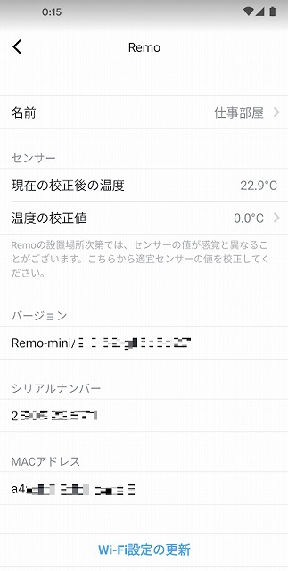
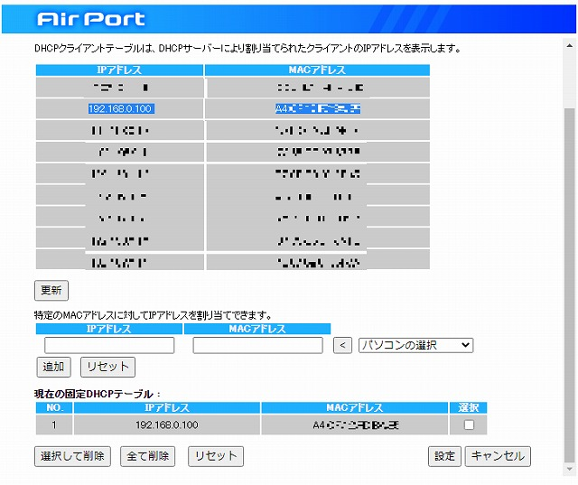
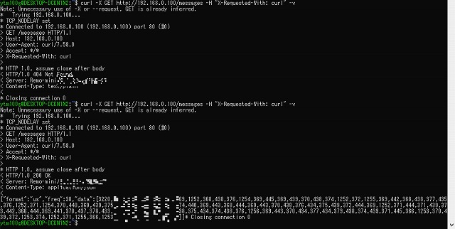
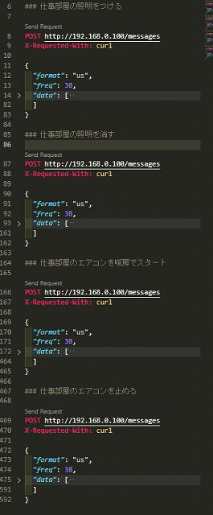
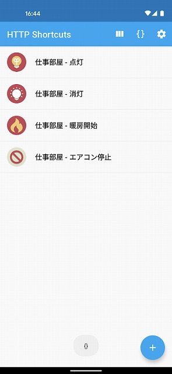

Nature Remo のローカル API 触ってみる
スマートリモコンへの依存
11 月の引っ越しを機に、家電を「OK, Google」で動くようにしました。
ただ、この 2 ヶ月ちょっとで 2 回もその家電を操作できなくなりました。
Google、12月14日の約45分間ダウンの原因と対策を詳解 - ITmedia NEWS
どうやら、Google も Nature Remo (リモコン) もクラウド側が死ぬと何もできなくなるようでした。
もはや普通のリモコンは乾電池を抜いて、ダンボールに綺麗にしまったので、
Nature Remo が死んでいた寒い朝は布団から出ることが出来ず、本当に遅刻しかけました。
もはやこれは災害です。スマート ホームはこういった災害に対策が必要です。
Nature Remo はローカル API があるらしい
つまり Google 社・Nature 社 (たぶん AWS) などのクラウドを経由せず、
ローカル ネットワーク内で信号の発信まで出来るということらしい。
Nature Remo Cloud API(以降API) を利用することで、Nature Remoシリーズ(以降Remo)のセンサーから得られる情報を取得する、Remoから赤外線を送信する、Natre Remo Eシリーズ（以降Remo E）に接続したスマートメーターから得られる電力データを取得するなどのアクションを行うことができる。
やってみた
ローカル API のリファレンスは以下の通り。
Swagger から自動生成してる感じで、特別分かりやすいものではなかったけど、
リクエストが簡単なので困ることはなかったです。
なんか最初に
「Bonjour で Remo に割り当てられているローカル IP アドレスを探せ」
的なこと書いてるけど、Remo のアプリから MAC アドレス確認できるので
それでルーターの設定画面からローカル IP アドレスを特定すればいいと思います。
(MacOS だと Bonjour 入っているからこっちの方が早いのかな、よく分からん)


.local でもアクセスできるっぽいけどプライベート ネットワークでそんなことする意味が分からないので、固定 DHCP テーブルに追加した。
上記の通り、Remo Mini は「192.168.0.100」に固定した。
リファレンスに従って、テストで WSL2 使って以下のようなリクエスト送る。
1 | curl -X GET http://192.168.0.100/messages -H "X-Requested-With: curl" -v |

GET /messages エンドポイントは、基本的に 404 が返ってくる。
が、直前にリモコンから赤外線信号を送ると、信号の内容 (?) が JSON オブジェクトで取得できる。
あとはその JSON オブジェクトを POST /messages エンドポイントに投げるだけで、
まったく同じ信号が発信されるので家電が操作できる仕組み。

VS Code の REST Client っていう拡張機能おすすめです。
分かりやすく書けて、そのあと cURL のワンライン コマンドに変換してくれます。
REST Client - Visual Studio Marketplace
実際に動かした動画が以下です。
ひと通り、動作することが確認できたので、
あとは布団の中からでも同じことができるようにスマホに cURL クライアント入れます。

Android の cURL クライアントは以下のものを使いました。
HTTP Request Shortcuts - Google Play のアプリ
cURL コマンド貼り付けたらそのままいい感じにボタン生成してくます。
先に紹介した S Code の REST Client で コマンド生成できるので相性○でした。
まとめ
API 触るところは簡単にできました。
もちろん、スマホが Nature Remo と同一ネットワークにいる必要はありますが、
これでクラウド サービスの障害などの影響を受けずに家電をコントロールできます。
クラウド サービスの障害に同情してしまうエンジニアのみなさん、
是非、スマート ホームの災害対策はしましょうね!
おまけ
IO-DATA の IP アイソレーションが有効化される仕様で
Nature Remo に ping 通らなくて泥沼にハマりました。
SSID が特定の文字列から始まっていると IP アイソレーションが発動するので、みなさん気をつけてください。。。
プリンターがWi-Fi接続できない/印刷できない｜Q&A | IODATA アイ・オー・データ機器
※※注意※※
お使いのWi-Fiルーターによっては、SSIDが複数存在します。
「Gamexxxxx」「Guestxxxxx」「IO-Guest-xxxxx-2G」などのゲスト用SSIDは、一時的な利用者向け（友人や店舗のお客様向け）のSSIDであり、プレイバシーセパレーター（IPアイソレーション）が有効です。
プレイバシーセパレーター（IPアイソレーション）が有効な場合、パソコンやスマホとの通信が制限され、印刷ができません。
プリンターは、ゲスト用SSIDには接続しないでください。
Nature Remo のローカル API 触ってみる